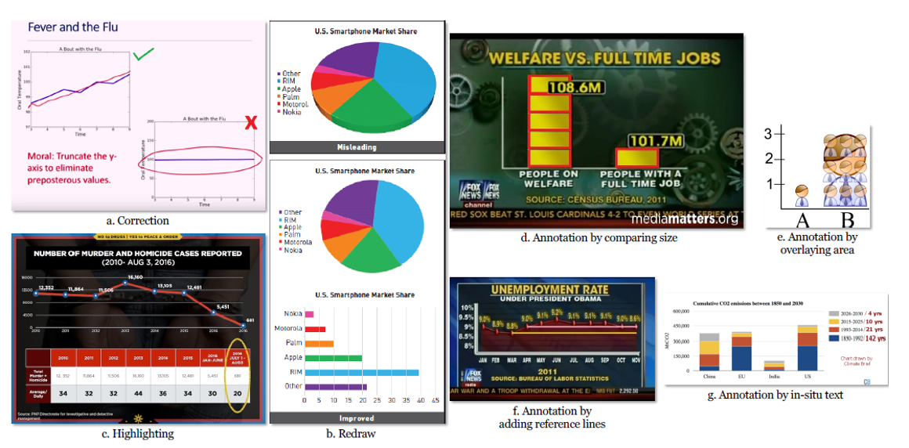
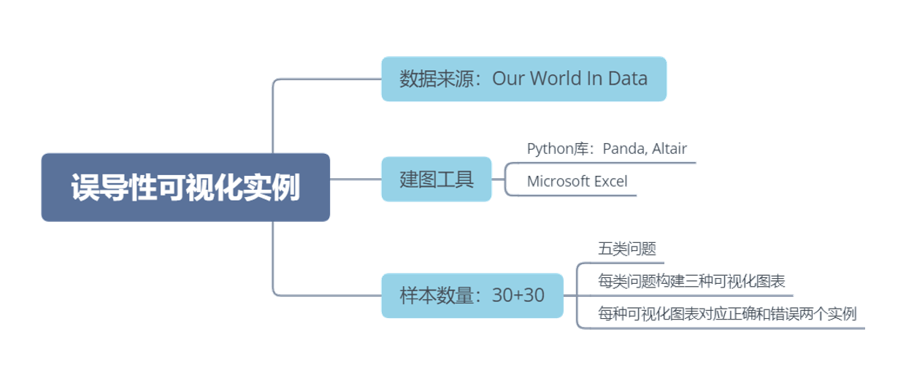
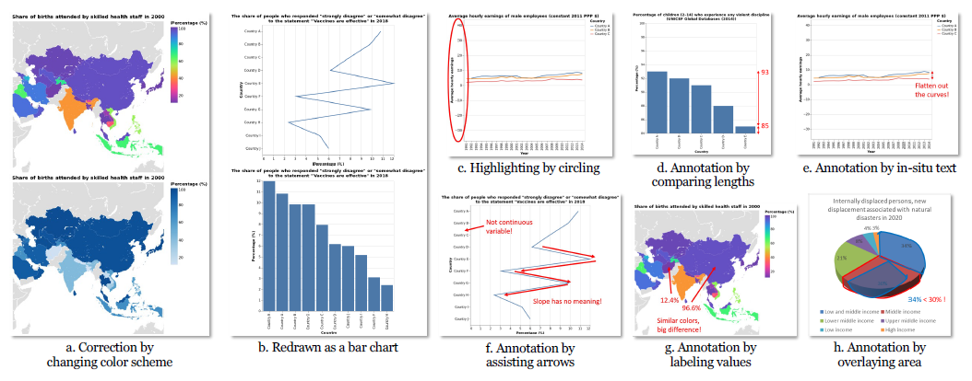
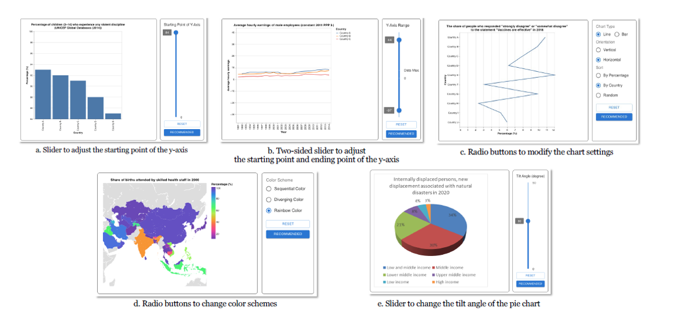
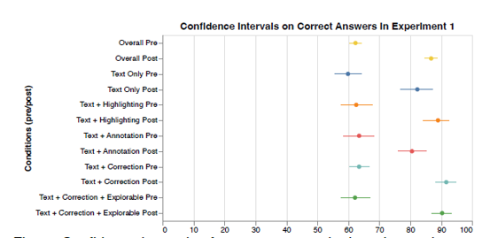
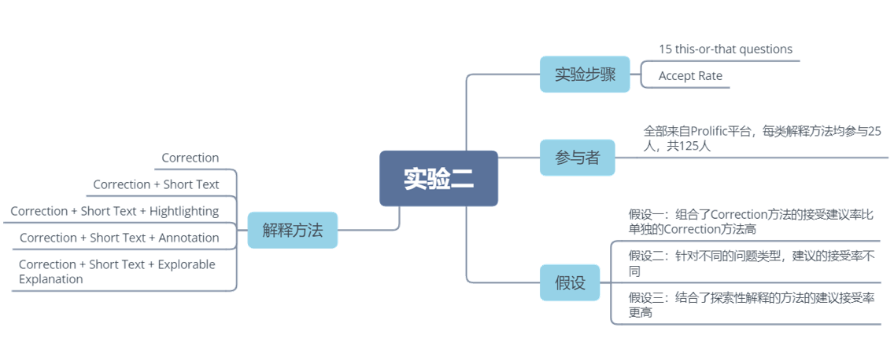
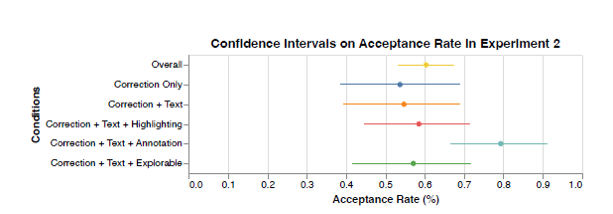

论文：Why Change My Design: Explaining Poorly Constructed Visualization Designs with Explorable Explanations
作者：Leo Yu-Ho Lo, Yifan Cao, Leni Yang, Huamin Qu
发表：VIS 2023
尽管可视化工具广泛可用且易于获取，但并非所有人都了解如何创建准确且诚实的数据视觉表示的最佳实践和指导方针。已有大量的书籍和文章被编写出来，揭示了构建不良图表的误导潜力，并教导人们如何避免被它们欺骗或犯自己的错误。这些读物使用各种修辞手段向读者解释概念。在我们对一系列书籍、在线材料和设计研讨会的分析中，本文确定了六种常见的解释方法。为了评估这些方法的有效性，本文进行了两项众包研究（每项研究参与者N = 125），以评估它们教导和说服人们进行设计更改的能力。除了这些现有的方法，本文引入了可探索性解释的概念，这使读者可以尝试不同的图表设置，并观察更改如何在可视化中反映出来。尽管本文没有发现解释方法之间存在显著差异，但本文的实验结果表明，接触解释后，参与者在识别欺骗性图表方面的熟练度有所提高，对可视化设计的改动建议更加接受。本文发现参与者愿意接受超过60%的说服性评估中提出的调整。然而，本文没有发现不同解释方法在说服参与者接受修改方面存在显著差异。
背景介绍
现存有不少用于解释误导性可视化的方法，但缺乏全面的整理以及针对其有效性的评估，目前学术界是存在相关的自动可视化推荐和矫正系统，它们主要有两个特点：
- 基于目前可视化社区存在的指导规则
- 提供自动错误可视化实例的检测，及更正推荐
同时这类系统也存在一些问题：缺乏”交流“层面的技术，也就是没有向用户解释为什么某种可视化实例存在错误或者隐患
本文贡献
• 编译整理了目前存在的针对误导性可视化的解释方法在现有解释方法的基础上，添加了探索性解释
• 针对这些解释方法的有效性，做了两方面的评估实现
相关工作
误导性可视化研究
- Huff’s “How to Lie with Statistics”
- Tuffe’s “The Visual Display of Quantitative Information”
自动检测和误导性可视化的解释技术
文本提示：
- 基于预定义的规则
- 无需预定规则
可视提示：
- 依赖专家指导
- 高计算开销
探索性解释
解释方法
本文通过互联网、查阅文献、组织研讨会三个途径，搜寻汇总了六类对可视化实例的解释方法，并分为了文本和可视两大类，可视类又分为标记和对比两个子类
六类解释性方法分别是：
- Short Text: 用简短的句子对图表上的问题作出解释
- Long Text: 提供详细的解释，一般会有多个段落
- Correction: 在原始的图表上做修改
- Redraw: 直接重新创造一个不同类型的图表
- Highlighting：在原始图表上的特定区域做高亮，以引起读者的注意
- Annotation：更加突出的展示图表上的问题，并添加注解

解释设计
构建误导性可视化实例
三个设计问题：
Truncated Axis
Inappropriate Axis Range
Inappropriate Use of Line Chart
两个感知问题：
Ineffective Colour Scheme
3D Pie Chart

解释方法
方法选择：
- Short Text
- Correction or Redraw
- Highlighting
- Annotation
- Exploration Explanation

评估实验
实验一：解释的学习有效性
解释方法选择：
- Short Text(baseline)
- Short Text + Highlighting
- Short Text + Annotation
- Short Text + Correction
- Short Text + Correction + Exploration Explanation
实验步骤：
- pre-intervention test
- intervention
- post-intervention test
参与者：
全部来自Prolific平台，每类解释方法均参与25人，共125人
假设：
假设一：干预后的正确率高于干预前的正确率
假设二：探索性解释对干预后测试的正确率有更大的影响

结果分析：
正确率中位数：
干预前：19/30
干预后：27/30
ANOVA test: F(1,248) = 288, p < 0.0001

假设一：接受
假设二：拒绝
实验二：解释的说服有效性

结果分析：
Truncated Axis, Inappropriate Colour Scheme, 3D pie charts
t-tests with Bonferroni correction:
a) vs. Inappropriate Colour Scheme (p : 0.007)
b) vs. 3D pie charts (p : 0.046)

假设一：拒绝
假设二：接受
假设三：拒绝
总结
• 对误导性图表给出解释的确能帮助读者更好地识别错误图表，但探索性解释并未明显由于其他解释方法
• 对误导性图表给出解释的确更能使读者接受更改建议（60%接受率），但各个解释方法之间的差异并不明显，且不同的图表问题得到的建议接受率不同
讨论
• 公认的可视化设计准则在特定问题不一定适用
• 单独的文本性解释是否足以解释误导性可视化尚不清楚
• 探索性解释没有对两项实验的结果产生明显影响，但其潜力很大
✉️ zjuvis@cad.zju.edu.cn